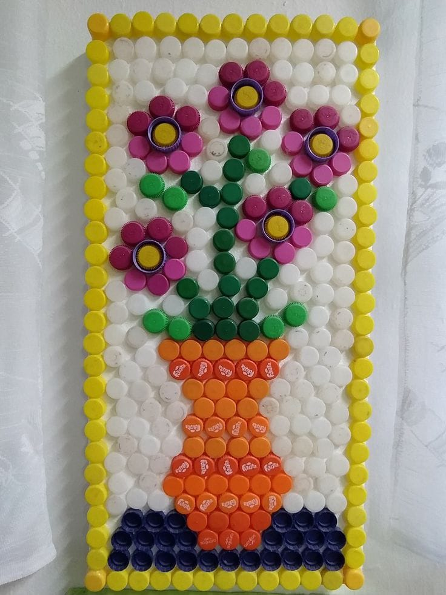

Tutup botol plastik dapat disusun menjadi hiasan dinding dengan bentuk bunga, kupu-kupu, atau pola geometris. Kerajinan ini melatih kreativitas dan memanfaatkan tutup botol yang biasanya dibuang.
Harga jual = Rp15.000
Laba = Rp15.000 - Rp12.000 = Rp3.000